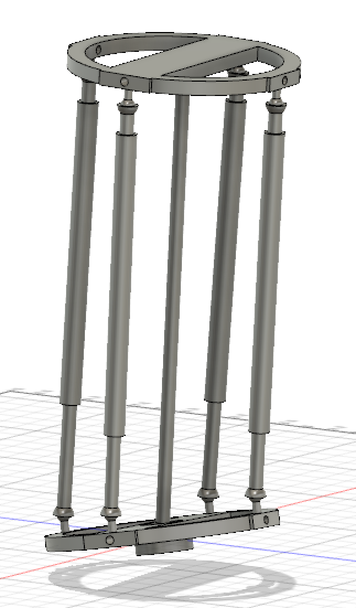
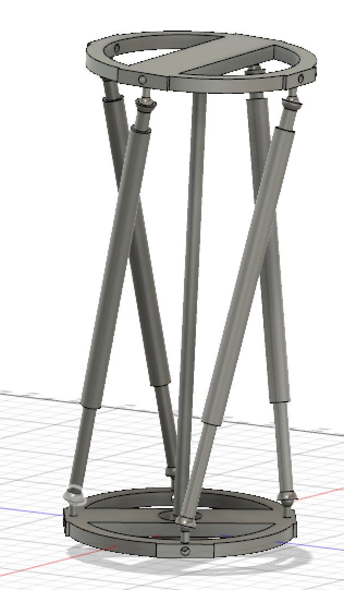
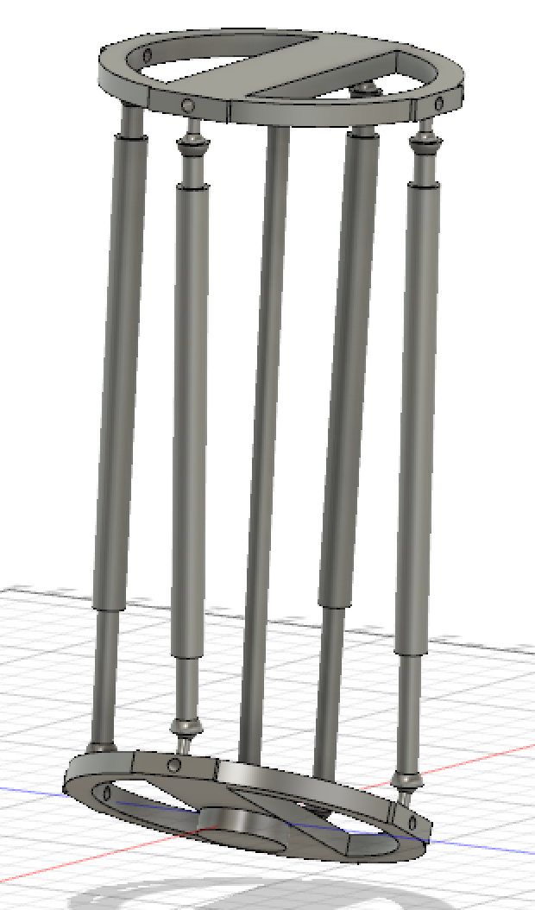

The hip joint is the same as the calf and foot joint presented below, but with the ball end at the hip instead of at the knee (so upside down). The knee is a simple revolute joint. I'm 99% that this design captures all of the DOFs of the human lower body. Some advantages to this design: it's buildable (ball joints are readily available); it's easy to add springs to each piston for the purpose of adding series compliance to the body. Disadvantages: I'm not sure the range of motion of the joints given the limited range of motion of the ball joints that comprise them.

The foot section (lower circular plate) can move in 3 ways: rotation about the central axis of the calf, tilt left to right, and tilt forwards and backwards.
  